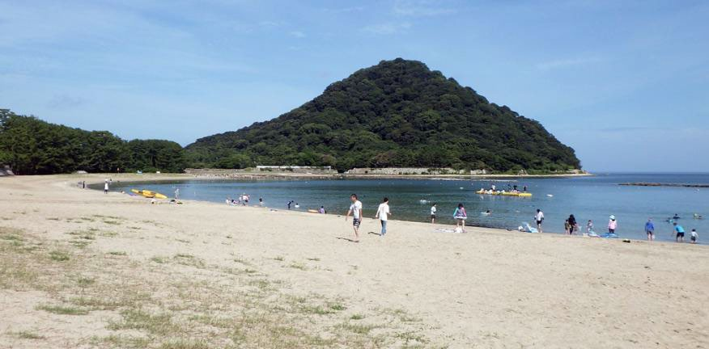
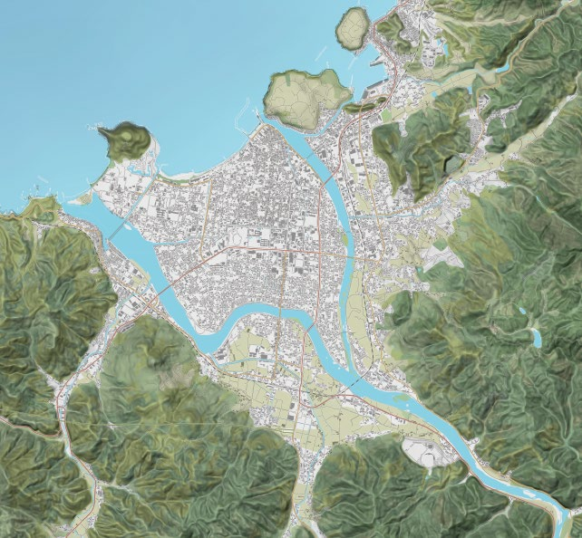
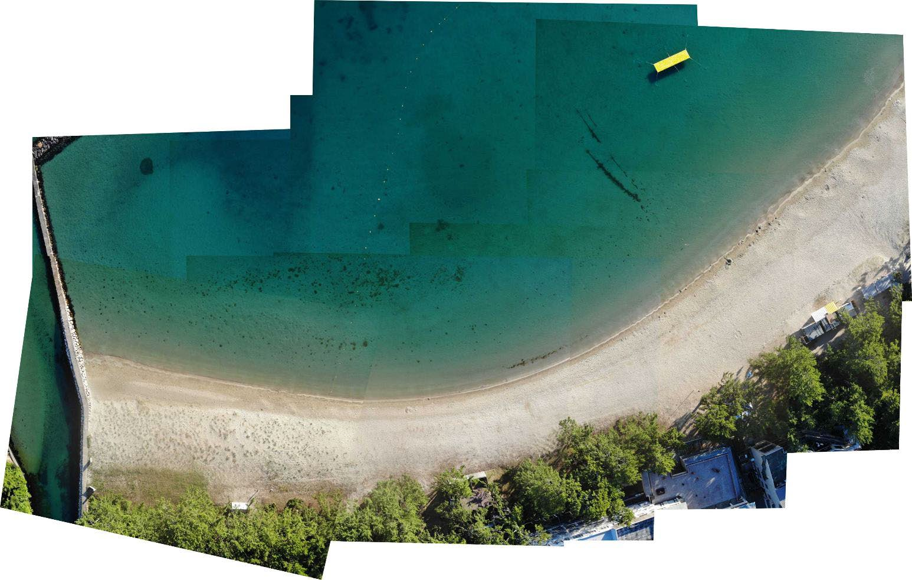
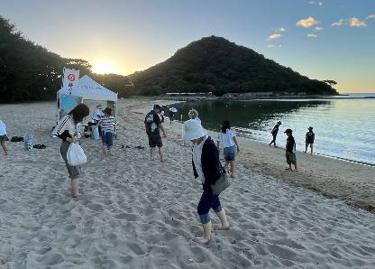
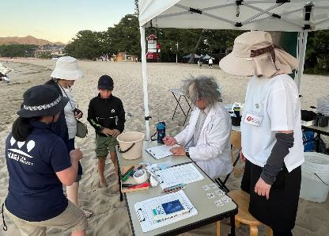
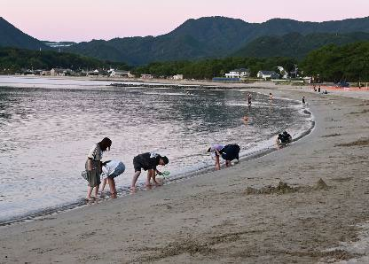
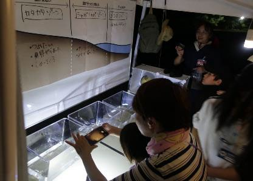
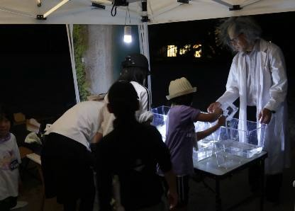
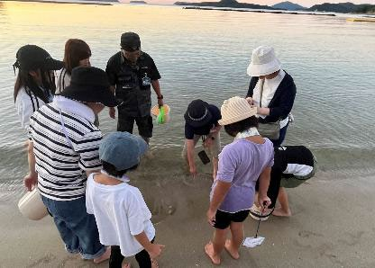

2025年7月26日（日）18:30〜20:00 ／ 菊ヶ浜
菊ヶ浜は、阿武川が日本海にそそぐ場所にあります。阿武川が大雨のたびに山から運んできた砂がたまってできた砂浜です。











調査1・環境調査。裸足で砂浜を歩き、地形や砂の状態（感触・温度・もようなど）を観察しました。地形や砂の状態をもとに、砂浜を4つのゾーン（サラサラ・カタカタ・シャバシャバ・ボコボコ）に分けました。ゾーンの説明は 砂浜ラボのページ にまとめています。
調査2・生き物調査。生きものの気配が多い3つのゾーン（カタカタ・シャバシャバ・ボコボコ）で採集し、種類・サイズ・環境を記録しました。
全部で8種25個体。図鑑は 菊ヶ浜ずかん へ。
| ゾーン | 生物 | 個体数 | サイズ(mm) | 採集者 | 環境 |
|---|---|---|---|---|---|
| カタカタ | スナガニ | 7 | 甲幅 約13〜16 | 荒川・中村・村田 | 砂の表面 |
| シャバシャバ | ナミノコガイ | 1 | 殻長 25 | 伊達 | 波打ちぎわの砂の中 |
| ボコボコ | キンセンガニ | 3 | 甲幅 33〜42 | 中村・白井 | 水底の砂の中 |
| コタマガイ | 1 | 殻長 28 | 中村 | 水深約10cmの砂の表面 | |
| コウイカ類の一種 | 1 | 外套長 30 | 村田 | 水底の砂の表面 | |
| ユビナガホンヤドカリ | 7 | 甲幅 約3〜7 | 村田・中村 | 水深約30cmまでの砂の表面 | |
| 種不明の魚類の稚魚 | 1 | 全長 約20 | 荒川 | 水深約15〜20cmの水中 | |
| アンドンクラゲ | 4 | 傘径 約15 | 村田・荒川 | 水底から離れた水中 |
この回で記録した8種は、ラボの成果物に反映されています
菊ヶ浜ずかんを見る ›
ここ菊ヶ浜では、砂浜がどんな環境から成っていて、どんな生きものがすんでいるのか、きちんと調べられたことがありませんでした。そんな中、中村さん・村田さん・荒川さんたち特別調査員をふくむフィールドラボの活躍により、菊ヶ浜が大きく4つの環境から成っていることが分かりました。さらに、そのうち3つの環境を調べたところ、それぞれの環境ならではの生きものたちがすんでいることも分かりました。
このことは、同じ砂浜でも、ちょっとした環境の違いと、生きものたちの種類やくらしが深くつながっていることを示しています。この気づきを頭に置いて調査を積み重ね、図鑑をつくって世に示せば、多くの人が菊ヶ浜に興味をもち、訪れ、未来に引きつぐために何をすればよいかを考えるエネルギーが生まれるはずです。そんなプロジェクトの最初の一歩を、みなさんといっしょにふみ出せたことをうれしく思います。